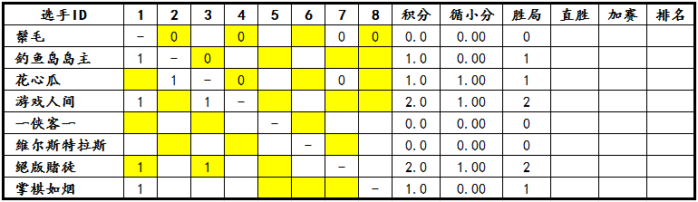

“西北狼”杯第一届博弈规则论坛战9月14日～9月18日战报
#1 “西北狼”杯第一届博弈规则论坛战9月14日～9月18日战报作者：屏蔽 发表时间：2013-9-19 10:02:37
“西北狼”杯第一届博弈规则论坛战决赛循环赛已经进行了30天。今日凌晨，裁判长公布了决赛循环赛用时统计，截至本帖发表时，已有四盘对局发生了超时，分别是鬃毛对阵釣鱼岛岛主、游戏人间、掌棋如烟，鬃毛超时三盘，以及花心瓜对阵游戏人间，花心瓜超时。
赛程过半。目前，28盘决赛对局已经完成7盘，占总数的25%。
对阵积分表根据裁判员的判罚，在每天上午更新。论坛战战报每隔5天发布一次。比赛奖励将按照实际情况随时发放，请各位选手注意查收。

［此帖子已被 屏蔽 在 2013-9-19 10:03:01 编辑过］
#2 Re:“西北狼”杯第一届博弈规则论坛战9月14日～9月18日战报作者：与郎共五 发表时间：2013-9-19 11:52:10
5手内结束，也算完成了？
#3 Re:“西北狼”杯第一届博弈规则论坛战9月14日～9月18日战报作者：屏蔽 发表时间：2013-9-19 12:23:06
如果你是指规程中的那个完赛的话，不算。
胜方没有发放胜局奖励，负方以后也不会拿到完赛奖励。